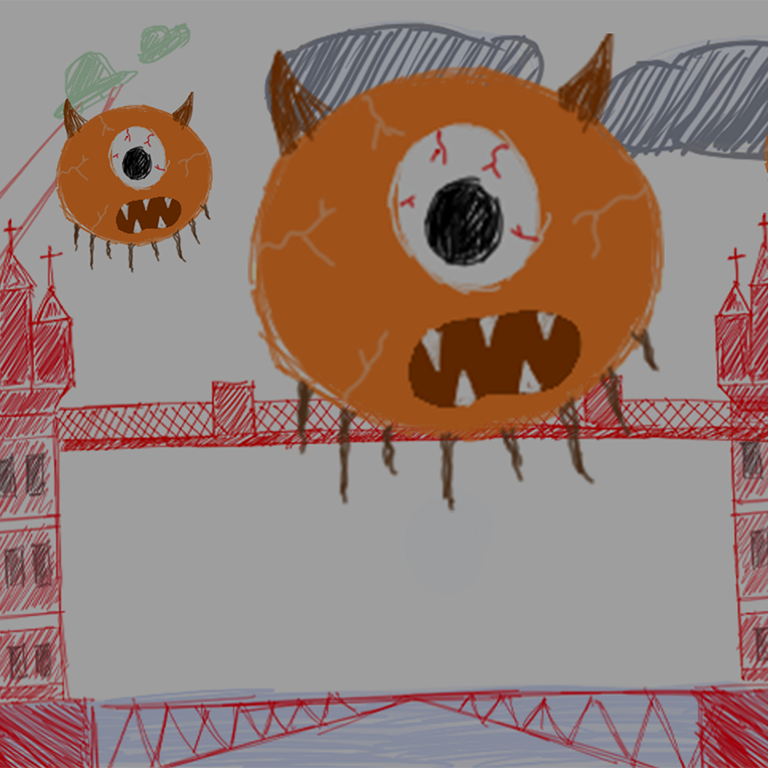
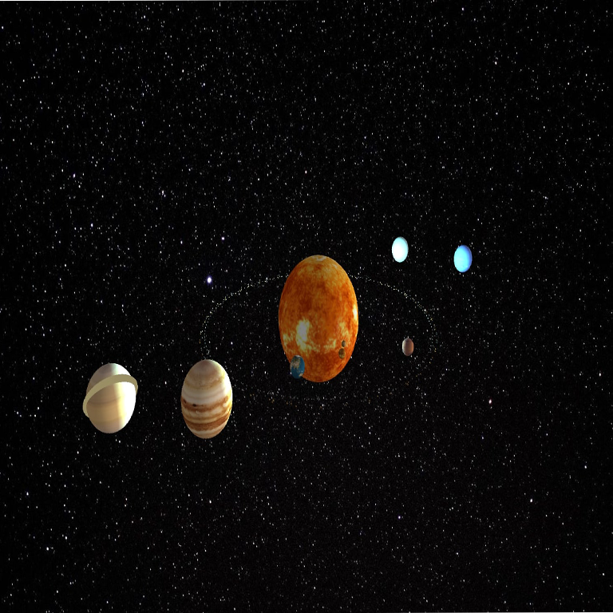
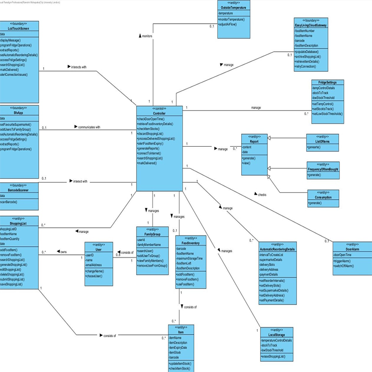
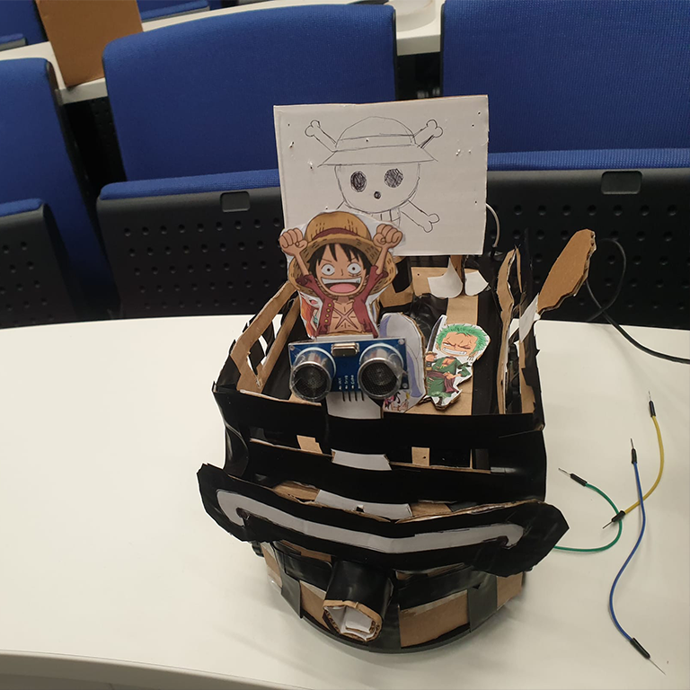

Leveling up as a CS student, crafting virtual worlds and pixelated dreams🎮✨
About Me
Hello, I'm Ramshri Mohapatra, an international student from India in my second year
at
CITY University of London. Technology has been a constant in my 21st-century life,
leading me to discover my passion for computer science. I find joy in the challenges of
coding, problem-solving, and project work. My fascination with game development
grew from creating a game in my first year. I'm driven by a love for creativity and
problem-solving, eager to build a rewarding career in the ever-evolving tech industry.
Join me on this exciting journey!
Skills
Experience
Education
Interests
Languages Java, C++, SQL, Python, C#, Bash, HTML, CSS, JavaScript
Technologies and Tools SalesForce, GitHub, Linux, Internet Explorer,
Visual Paradigm, Unity, Microsoft Office, Microsoft Teams, Windows, Postman API.
Aug. 2023 - Sep. 2023 | Bhubaneswar, India Summer internship at
GoldenPegasus IT Consulting and Services Pvt Ltd.
Jun. 2023 | Remote Virtual internship at Lloyds Banking Group.
Jun. 2023 | Remote Participated in IEUK 2023: Technology.
Feb. 2023 - Present | London Working as a student ambassador for
my university's marketing team.
CITY University of London BSc(Hons)
Computer Science Expected graduation - 2025
Doon International School 2019-2021
SAI International School 2010-2019
Books I have recently started reading books, my personal recommendation
will be "Kafka on The Shore" by Haruki Murakami.
Movies Dead Poets Society, Ready Player One, Fight Club.
Anime Attack on Titan, Tokyo Ghoul, Terror in Resonance.
Music I listen to all types of music.
Sports I play cricket and basketball and love working out at the Gym.
My Projects

Porky The Saviour
Developed a 2D Boss-Fight Game using Unity physics engine.
Realm Runner: The Epic Tale of the PurpleBoy
Developed a 2D platformer game using JBox2D physics engine.

Solar System Simulation
Used Processing language to design a simulation of solar system in my first week of
University as part of a bootcamp.
Recipe program
Wrote a program to take input of orders and give output as ingredients required for the
specific order using C++.
Project Frag
Working on a horror themed First Person Shooter game using Unreal engine.
Esports Database Management
Designed and implemented a relational database management project.

SFX Fridge Software
Designed Use case diagrams, Analysis diagrams, Sequence diagrams and CRC cards for a case
study about a smart fridge company.

IEEE END OF THE LINE COMPETITION
Participated in a robotics competition with a team of three.
Porky The Saviour
This game is set within the dreams of a kindergarten kid who resides in the outskirts of London. Each
day, he gazes out of his window at the London Bridge. His beloved pet pig, named Porky, is a constant
companion, and the two share a special bond. One night, the child experiences a dream where aliens
attack London, prompting Porky to soar into action save the city. The artistic style
chosen for the game is a blend of scribbly and crayony, reminiscent of kindergarten drawings
and the scenes that unfold in the child's dreams.
My Contribution and Learnings:
• Developed the Game using Unity, this gave me a chance to learn C# language and the interface of Unity.
• Lead a team of three to develop the game within a demanding four-day deadline, helping me to work on my
time-management and team-work skills.
• Wrote the AI code for the boss character, learning about behaviour trees and how to use them in games.
Realm Runner: The Epic Tale of the PurpleBoy
The game is a platformer inspired by games like Celeste, Super Mario, featuring three levels inspired by
the spirit heroes
from the game Dota 2. In this game, our main character is the purple boy who excels as a Realm runner in
a
utopian society. The sport he engages in is akin to parkour but involves dimensional travel.
My Contribution and Learnings:
• Developed the 2D platformer game using JBox2D physics engine, this helped to get a clear understanding of
OOPs
• Designed characters and multiple levels, used text files for data storage and retrieval
for recording high scores and
saving/loading levels.
• To create the main character, the purple boy, I employed Adobe Photoshop, and for the game environment, I
utilized assets available on itch.io and photoshop. The entire game was built from scratch,with use of my
individual
effort in both design and implementation.
Solar System Simulation
This project marked my introuction into coding, forming an integral part of a boot camp where
participants were tasked with showcasing something creatively derived from the week-long curriculum. I
found particular enjoyment in the aspect of 3D modeling using the Processing language, prompting me to
create a model of a solar system.
My Contribution and Learnings:
• Used Processing language to design a simulation of solar system in my first week of
University as part of a bootcamp.
• This intrigued my interest for programming and how simple text inputs can
produce beautiful outcomes.
Recipe program
This program is intriguing as it utilizes various data structures, such as maps and vectors, to process
files containing orders and ingredients. It then employs these structures to calculate the final
quantity of ingredients required for a given recipe.
My Contribution and Learnings:
• Wrote the program to take input of orders and give output as ingredients required for the
specific order using C++, this helped me learn the syntax of C++.
• Used various data structures like vectors and maps for reading .txt files containg the
orders, this gave me and clear understanding of sata structures.
Project Frag
Currently, I am part of a team of 15 members working on an exciting project—an FPS shooter game with
horror elements. The game is set in an abandoned amusement park, providing a chilling and atmospheric
backdrop for players. We are collectively pooling our skills and creativity to bring this unique gaming
experience to life, combining the intensity of a first-person shooter with the suspenseful ambiance of a
horror setting.
My Contribution and Learnings:
• I've been collaborating with one of my colleagues on the gun system component of our project. After
conducting a thorough analysis, we've created some class diagrams to outline the structure. I've also
developed initial model code to implement the defined classes and functionalities.
•I've conceptualized an idea called the Temporal Inversion Pavilion, drawing inspiration from an hourglass.
This innovative concept introduces an element of time travel to our FPS shooter game set in the abandoned
amusement park. Currently, I'm actively engaged in the implementation phase, working to bring my theoretical
ideas to life.
Esports Database Management
• Designed and implemented a relational database management project from scratch, including
Entity Relationship Diagram (ERD) creation using Visual Paradigm.
• Developed a fully functional database using phpMyAdmin and applied SQL for both Data
Definition Language (DDL)
and Data Manipulation Language (DML) tasks.
SFX Fridge Software
• Designed Use case diagrams, Analysis diagrams, Sequence diagrams and CRC cards for a case
study about a smart fridge company.
IEEE City Robotics End of Line Competition
• I along with my team programmed the robot vehicle using Arduino and it follows the race track using IR
sensors.
•The design of the vehicle is inspired by Going Merry, which is a pirate ship in the famous anime
One Piece.